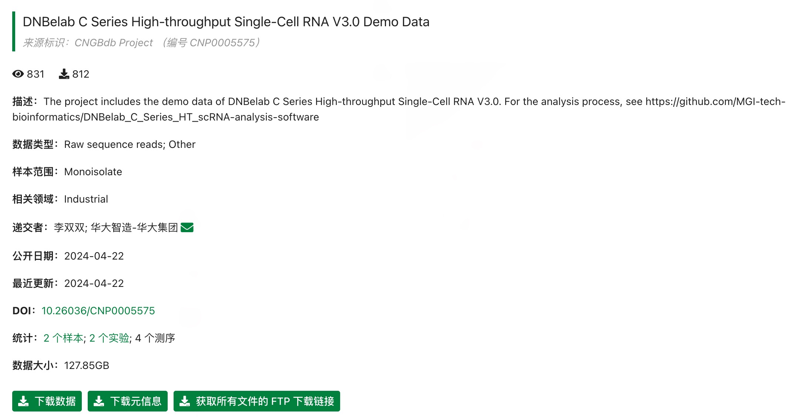
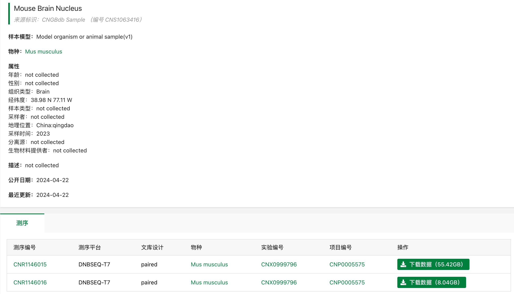
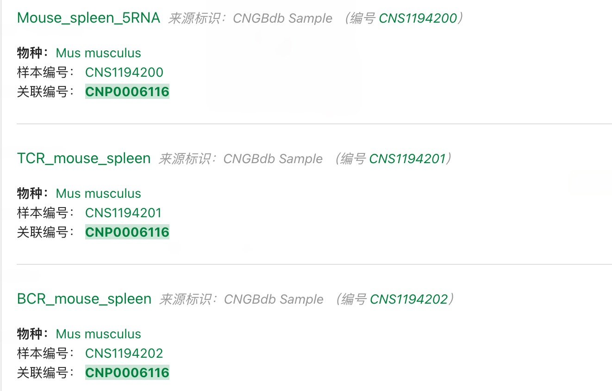
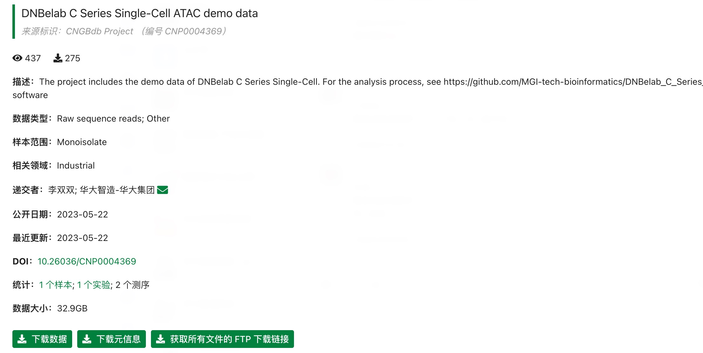

Demo datasets are hosted on CNGB (China National GeneBank). Due to human genetic resource regulations, only mouse sample data is provided.
◆ scRNA-seq v3 Data • ◆ scVDJ-seq Data • ◆ scATAC-seq Data
Project URL: https://db.cngb.org/data_resources/project/CNP0005575/
Project Overview:

You can click on "Sample" or "Experiment" to access specific sample information:

Data Composition:
Project URL: https://db.cngb.org/data_resources/project/CNP0006116/
Sample Information: The sample is mouse spleen tissue, containing 5' RNA, TCR, and BCR data.

Usage Tip:
If you don't need to analyze 5' RNA data, you can directly download the singlecell.csv file from the single-cell data FTP directory within the 5' RNA data.
Project URL: https://db.cngb.org/data_resources/project/CNP0004369
Sample Information: The sample is mouse brain tissue.

Usage: You can directly download the raw data via the FTP link for analysis.